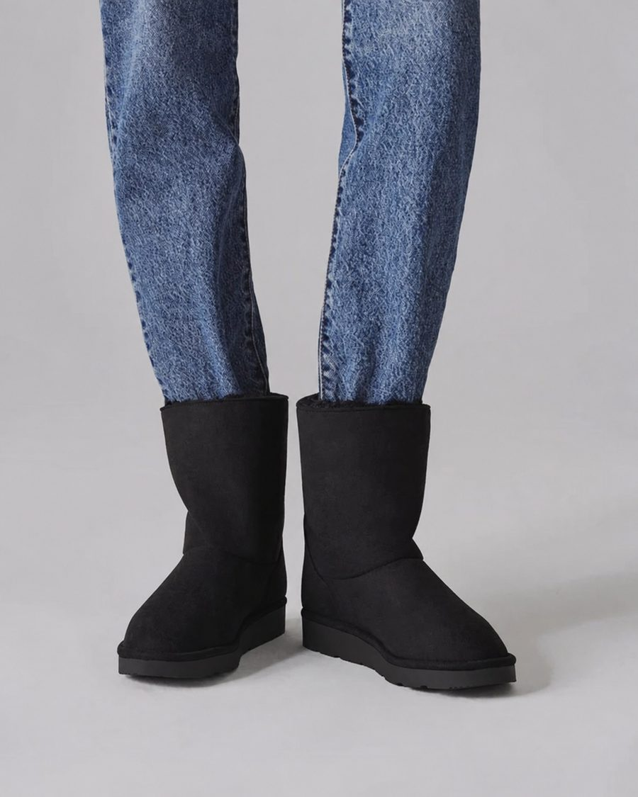
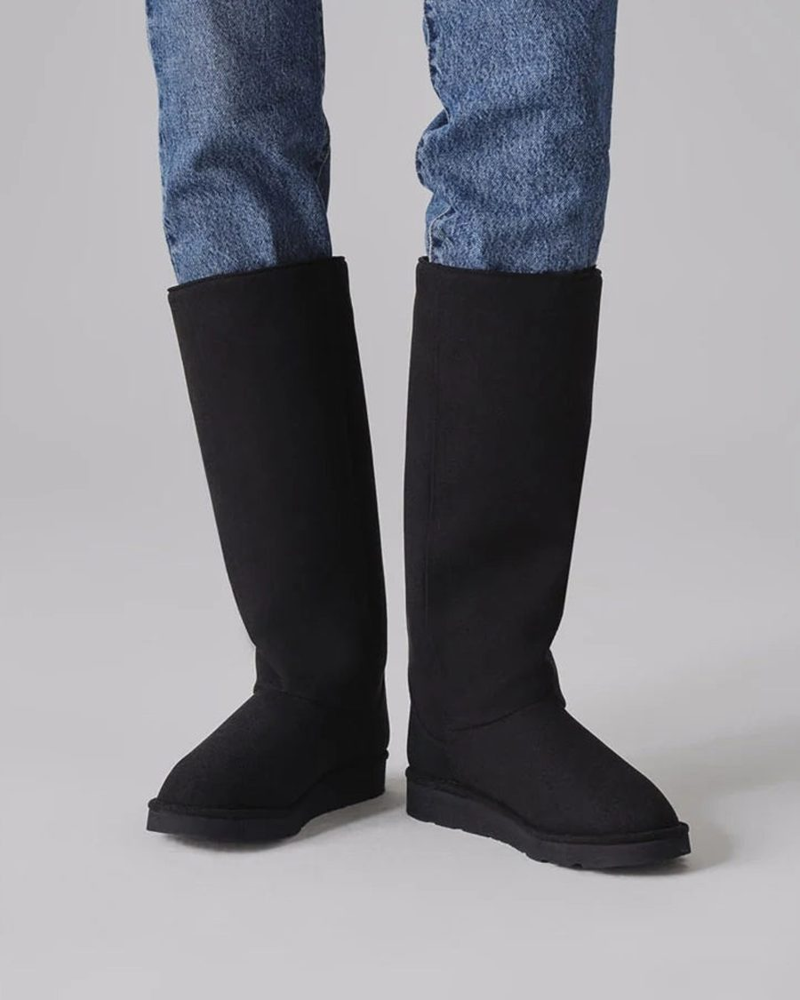

To jest jedno miejsce na wszystko. Ten adres sie nie zmienia — zawsze wchodzisz tutaj
i zawsze widzisz aktualna wersje. Zadnych nowych plikow i linkow.
Pod kazdym postem klikasz Jest ok albo Do poprawki i piszesz, co zmienic.
Uwaga leci do nas od razu — widzimy, ktorego postu dotyczy, o ktorej godzinie i co napisalas.
Twoje wczesniejsze uwagi i nasza odpowiedz zostaja przy poscie, wiec nie musisz niczego szukac
ani poprawiac dwa razy tego samego.
wrzesien i poczatek pazdziernika
pt 25.09
Co jest w srodku
POST, 1 kadr, 1080x1350
Inside our Classic Vegan Short. Soft faux fur that keeps its shape all winter.
No compromise. No animals involved.
Every pair is hand-sewn in Italy, by people whose families have been making shoes for generations.
All our materials come from Europe. None from China. 🤍
COPY POPRAWIONE 27.09 wg jej maila z 22.09, punkt 7: Italian handmade, European materials, pokolenia tradycji szewskiej.
Twoje wczesniejsze uwagi
22.09 mail zrobione
Italian handmade / produkcja - to obszar, ktory zdecydowanie mozemy pokazywac mocniej. Materialy z Europy, nie z Chin, tradycje przekazywane od pokolen.
Copy przepisane na te fakty.
sob 26.09
One boot, three heights
KARUZELA, 3 kadry, 1080x1350


Our Classic Vegan boot comes in three heights.
Short for the city, mid for most days, long for the days that really mean it.
ZAPLANOWANE 26.09 na 20:30, Instagram + Facebook. Kolejnosc i podeszwa
Twoje wczesniejsze uwagi
26.09 zrobione
Ja bym tylko zmienila kolejnosc klatek: krotki but, sredni i wysoki.
Zrobione, post otwiera krotki. Opublikowany 26.09 o 20:30.
27.09 zrobione
Jest ok
Dziekujemy.
pon 28.09
Ankieta: Short / Mid / Long
STORIES, 2 plansze
Which one is your winter? Short, mid or long.
Tap to vote — and we will write to you first when your size is back.
WRACA DO PLANU 27.09 na prosbe Ani - byla w pierwszym dokumencie na 22.09 i wypadla przy przepisywaniu. Plansza 1: naklejka-ankieta na kadrze z trzema wysokosciami. Plansza 2: zaproszenie na liste, na kadrze Twoj rozmiar wroci - napiszemy pierwsi.
Twoje wczesniejsze uwagi
27.09 zrobione
To tez mi sie podobalo, a teraz tego nie ma w planie. (ankieta Short / Mid / Long)
Wypadla przy przepisywaniu planu, nasz blad. Wraca na 28.09 w Stories, razem z zaproszeniem na liste.
wt 29.09
Removable insole
POST, 1 kadr, 1080x1350
Two insoles, one pair of boots.
The classic one with faux fur for real winter, the thin one for milder days — swap them depending on the weather.
Need a different size? Exchanges are always free. 🤍
POPRAWIONE 27.09 wg jej maila z 22.09, punkt 6: sa DWIE wymienne wkladki, klasyczna z futerkiem i cienka bez. Wczesniej pisalismy o jednej i to byla wlasnie ta nieuwzgledniona poprawka.
Twoje wczesniejsze uwagi
24.09 zrobione
Wkladka troche nie ten ksztalt.
Kadr wymieniony na prawdziwy packshot Waszej wkladki ze sklepu.
27.09 20:16 zrobione
Do tego juz dawalam poprawki do copy - i nie sa tu uwzglednione.
Masz racje, przeoczylismy. Chodzilo o punkt 6 z Twojego maila z 22.09: sa DWIE wymienne wkladki, klasyczna z futerkiem i cienka bez futerka. Copy przepisane.
sr 30.09
39 czy 40
KARUZELA, 3 kadry, 1080x1350
39 or 40?
Between sizes? Tell us which style you want and which sizes you’re between. We’ll help you choose.
Need a different size? Exchanges are always free. 🤍
COPY OD ANI, 27.09 20:16 - jej wlasna wersja, wklejona doslownie. Sens posta wraca do pierwotnego: pomagamy dobrac rozmiar i rozkrecamy dyskusje w komentarzach.
Twoje wczesniejsze uwagi
27.09 20:16 zrobione
Co ten text w ogole znaczy? Ten post mial byc o tym, ze jesli wahasz sie miedzy rozmiarami to pomozemy dobrac. Zrezygnowaliscie z tego? Mielismy probowac rozkrecic dyskusje pod postem w komentarzach.
Nie zrezygnowalismy, zgubilismy sens przy przepisywaniu. Twoje copy wklejone doslownie i wracamy do pytania o rozmiar plus dyskusja w komentarzach.
czw 01.10
Oat Milk Tee / World Vegetarian Day
POST
Happy World Vegetarian Day.
No speech from us today — just our Oat Milk tee, which we would wear anyway. 💚
COPY OD ANI, 27.09 20:16 - jej wlasna wersja, wklejona doslownie. Kadr: Wasze zdjecia z jesiennej sesji, nie AI. Do zrobienia: karuzela z klatek z planu 15.10, tak jak prosila.
Twoje wczesniejsze uwagi
27.09 zrobione
Kurcze teraz zauwazylam, ze ta spodnica zle wyglada - nie nasza. Mozna usunac post i poprawic?
Post zdjety tego samego dnia z Instagrama i z Facebooka.
27.09 20:16 jeszcze robimy
Uzyjcie naszych zdjec z sesji, nie AI. I tutaj pierwotnie miala byc karuzela - wezcie te klatki z planu 15.10. COPY wole to co bylo we wczesniejszych propozycjach.
Kadr juz jest Wasz, ze sklepu, z jesiennej sesji. Twoje copy wklejone doslownie. Karuzela z klatek z 15.10 - robimy.
pazdziernik, od trzeciego tygodnia
pazdziernik, data po zdjeciach od Ani
Adoption Story 1 — Patricia i Oscar
REEL + karuzela
Oscar is almost 14. Old, black and big — the three things that make a dog hardest to adopt.
That is exactly why Patricia chose him. Two and a half years later they walk ten kilometres a day.
We have supported adoption since 2021. 🤍
Na ekranie / Stories: Stories, dziesiec plansz, na kazdej jedno zdanie jej wlasnymi slowami: 1 Oscar is almost 14. He turns 14 in December. 2 For ten years he was a farm dog in Hungary. 3 When his owner died, no one could take him. He ended up in a shelter. 4 Old. Black. Big. The three things that make a dog hardest to adopt. 5 That is exactly why it was clear to me it would be him. 6 I visited him twice. The first time to meet him. The second to take him home. 7 Two and a half years later we walk ten kilometres a day. 8 He does not like cuddling. He gets five minutes anyway. Every day. 9 A senior dog is not too old to learn anything new. 10 The best decision of my entire life. (malym drukiem: Oscar was adopted from Tierheim Kondorgos — the same shelter where Zeno is waiting.)
TEASER, osobno i wczesniej: jeden kadr do feedu + ta sama plansza w Stories. Na kadrze: OUR ADOPTION STORIES. Podpis teasera: Real people. Adopted dogs. Told in their own words. We have supported adoption since 2021. First story this week.